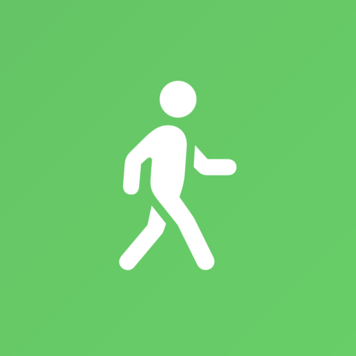
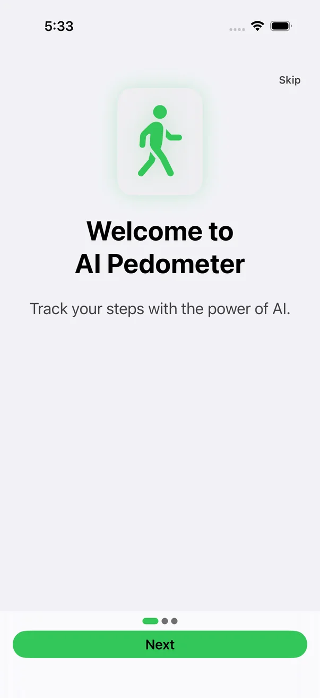

The signal
Movement is more than a total.
Goals, workouts, distance, trends, and recovery turn a daily count into useful context.

AIPedometer View on GitHubOn-device AI walking companion
Track steps, goals, and workouts across iPhone and Apple Watch. Get coaching from Apple Foundation Models without sending health context to a cloud AI service.
Open source · Apache 2.0 · iOS 26+ and watchOS 26+
Why AIPedometer
The signal
Goals, workouts, distance, trends, and recovery turn a daily count into useful context.
The intelligence
Apple Foundation Models generate insights and plans directly on supported devices.
The boundary
AI inference and its activity context are not sent to a cloud AI service.
The system
Keep the daily snapshot nearby on iPhone, Apple Watch, Home Screen, and Lock Screen.
See the routine
Choose a step to inspect the real app interface captured from the verified 1.0.4 build.

The first run explains the product before asking for health access.
What it does
Steps, distance, calories, floors, heart rate, streaks, and goals in one dashboard.
Insights, coaching, training plans, and smart reminders powered by Apple Foundation Models.
Track live walks, recover interrupted sessions, and import validated GPX routes.
Reduce live-metric cadence for longer walks and hikes while preserving the workout.
Keep the daily snapshot visible on Apple Watch, Home Screen, and Lock Screen.
Wheelchair push tracking, VoiceOver support, adaptable layouts, and regional formatting.
Privacy by boundary
AIPedometer reads only the HealthKit data you authorize. AI inference and the activity context used for it stay on-device. Purchase services receive the transaction and entitlement data needed to manage Premium access—not your workout narrative.
Read the privacy policy Read the security modelAvailable from source
The App Store release is not published yet. Developers can inspect the implementation, generate the Xcode project, and run the app locally.
Move with context